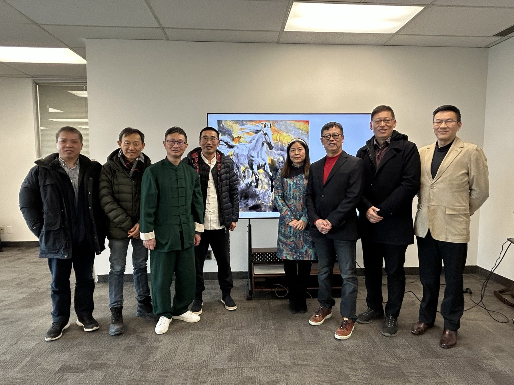
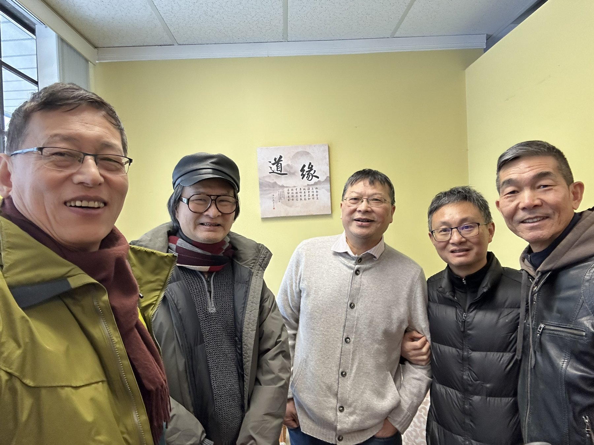
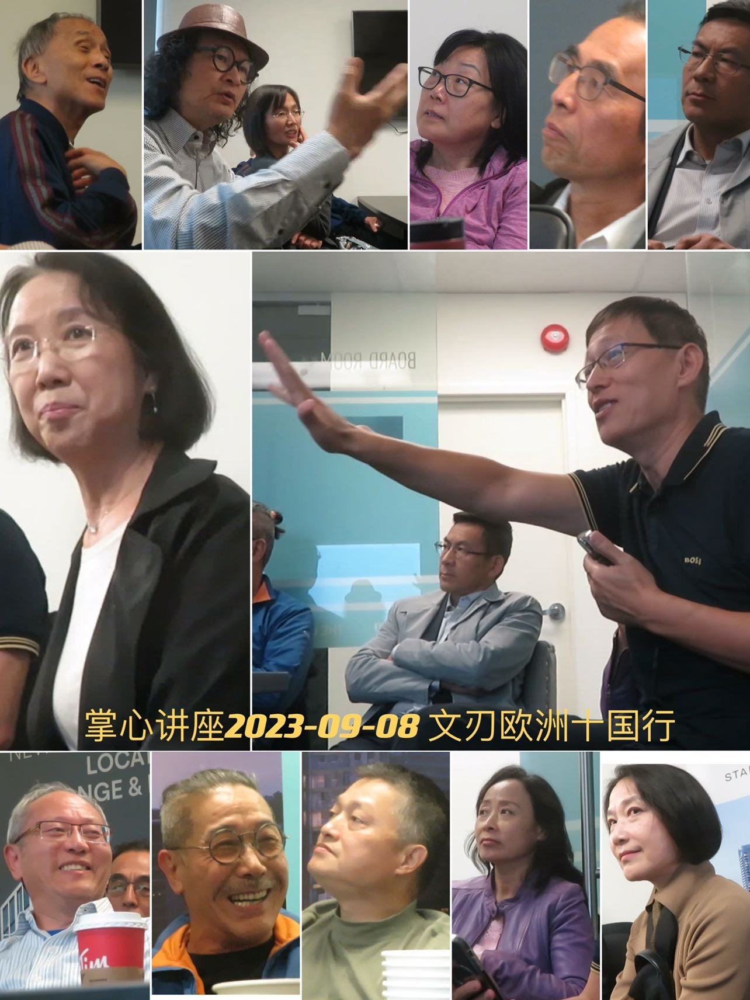

讲座全录
In-person Discussions & Talks, 2023–2026
掌心线下讨论和讲座，四年共 58 讲：古文明、哲学、比较宗教、诗词、艺术与科学。以下为历年档案，不是当前报名日程；新活动另行通知。管理员：黄忠、文刃。
二〇二六 · 掌心比较宗教学论坛 第二期14 讲
- 01佛学三讲 · 吠陀文明漫谈（每逢周六）Three Lectures on Buddhism: Musings on Vedic Civilization (Saturdays)古土 · 风动2026 · 5–7月
- 02「湖畔书院」诗词讲座十三讲（每逢周二）Lakeside Academy: Thirteen Lectures on Poetry (Tuesdays)主讲 陶然2026 · 4–6月
- 03掌心十日谈 ·《乾坤定位：中国传统的社会观》The Palm Ten-Day Talks: "Ordering Heaven and Earth: The Traditional Chinese View of Society"文尧2026 · 4/11
- 04《赤马问道：丙午之年与文明之思》The Red Horse Seeking the Dao: The Year of Bingwu and Reflections on Civilization文尧2026 · 4/4
- 05韦伯《新教伦理与资本主义精神》Weber's The Protestant Ethic and the Spirit of Capitalism陶然2026 · 3/28
- 06人类学（三）文化人类学Anthropology III: Cultural Anthropology谷谦2026 · 3/21
- 07《中国哲学导论》初探An Initial Exploration of Introduction to Chinese Philosophy颜钟祜 · 文刃2026 · 3/16
- 08人类学（二）考古学、语言人类学Anthropology II: Archaeology and Linguistic Anthropology谷谦2026 · 3/14
- 09人类学（一）概览、体质人类学Anthropology I: Overview and Physical Anthropology谷谦2026 · 3/7
- 10「马年说马」（文尧古琴 · 雪君太极开场）Speaking of Horses in the Year of the Horse (Opening Guqin by Wen Yao, Tai Chi by Xue Jun)骆奕同2026 · 2/28

- 11宗教（四）追寻生命的终极意义：内在与超越Religion IV: Seeking the Ultimate Meaning of Life: Immanence and Transcendence颜钟祜2026 · 1/17
- 12宗教（三）宗教传统的形成与交汇Religion III: Formation and Convergence of Religious Traditions颜钟祜2026 · 1/17
- 13宗教（二）轴心时代思想的突破Religion II: Breakthroughs of Thought in the Axial Age颜钟祜2026 · 1/10
- 14宗教（一）人类起源与秩序：神话与宗教Religion I: Human Origins and Order: Myth and Religion颜钟祜2026 · 1/3
二〇二五 · 掌心哲学论坛 第二期12 讲
- 01掌心·曼美共同主办 英语原创作品朗诵诗会The Palm and Manmei Co-Hosted Original English Poetry Recital王雪君2025 · 12/30
- 02岁末迎新餐会 · 尼采《悲剧的诞生》Year-End & New Year Gathering: Nietzsche's The Birth of Tragedy2025 · 12/27
- 03叔本华《作为意欲和表象的世界》Schopenhauer: The World as Will and Representation2025 · 12/20
- 04康德《判断力批判》Kant: Critique of Judgment2025 · 12/13
- 05黑格尔《美学》Hegel: Aesthetics2025 · 12/6
- 06海德格尔《论艺术作品的本源》Heidegger: The Origin of the Work of Art2025 · 11/29
- 07「海子诗歌的误区／国内诗坛动态」"Misconceptions of Haizi's Poetry / Trends in China's Poetry Scene"陈龙2025 · 6/28
- 08《萤火》新书发布会 · 第二届原创作品展（湖畔山庄）Fireflies Book Launch & 2nd Exhibition of Original Works (Lakeside Manor)2025 · 6/21
- 09「汲履登红堡，踉跄印度门」印度亲历"Slippers at the Red Fort, Stumbling at the India Gate": Firsthand Experiences in India文刃2025 · 3/15

- 10「都是青花惹的——博物馆杂谈」Blame It on Blue-and-White: Museum Musings骆奕同2025 · 1/18
- 11以拳悟道、以身证道Realizing the Dao through Martial Arts, Embodying the Dao through the Body王雪君2025 · 1/11
- 12新兴宗教 · 巴哈伊教Emerging Religions: The Bahá'í Faith古土2025 · 1/4
二〇二四 · 掌心哲学与比较宗教研讨论坛 第一期14 讲
- 01大美无言韵高古——漫谈古琴Great Beauty Without Words, Sublime Ancient Charm: Musings on Guqin张文尧2024 · 12/21
- 02Ancient Chinese Wisdom & International RelationsJeremy Paltiel2024 · 12/14
- 03圯桥听《流水》，琴韵出《千山》Listening to 'Flowing Water' at Yiqiao, Guqin Melodies Echoing from 'Thousand Mountains'张文尧2024 · 10/13
- 04《易经》的产生、发展及作用The Origin, Development, and Role of the I Ching张文尧2024 · 10/5
- 05「存在的焦虑与古典儒学的回应」Existential Anxiety and the Response of Classical Confucianism颜钟祜2024 · 9/28
- 06涅斯托利 vs《大秦景教流行中国碑》Nestorius vs. The Nestorian Stele石甫2024 · 9/14
- 07古希腊文化游踪之奇遇Adventures in Ancient Greek Cultural Travels骆奕同2024 · 9/9
- 08「太初有道」之道与道德经之道The Dao in 'In the Beginning Was the Word' and the Dao of Daodejing颜钟祜2024 · 9/7
- 09佛教源流Origins and Lineage of Buddhism古土2024 · 8/31
- 10阿奎那《神学大全》Aquinas's Summa Theologiae风动2024 · 8/10
- 11奥古斯丁《上帝之城》Augustine's The City of God风动2024 · 7/27
- 12理解《约伯记》Understanding the Book of Job石甫2024 · 7/13
- 13「诗中有禅」Zen in Poetry风动2024 · 7/6
- 14美学/现象学/语言哲学系列：柏拉图·亚里士多德·康德·黑格尔·萨特·海德格尔·胡塞尔·维特根斯坦Aesthetics, Phenomenology, and Philosophy of Language Series: Plato, Aristotle, Kant, Hegel, Sartre, Heidegger, Husserl, Wittgenstein文刃 · 风动 等2024 · 春季
二〇二三 · 古文明及文化艺术系列讲座18 讲
- 01专业书法Professional Calligraphy石甫2023 · 系列
- 02印度行Journey to India陈河2023 · 系列
- 03摄影专题Topics in Photography胡杨2023 · 系列
- 04欧游十国行Travels Across Ten European Countries文刃2023 · 系列

- 05德国文化历史German Cultural HistoryEmma 及先生2023 · 系列
- 06印度旅行Travels in India青枫2023 · 系列
- 07墨子Mozi宗源2023 · 系列
- 08古印度文明Ancient Indian Civilization兆龙2023 · 系列
- 09交响乐Symphonic Music唐芒2023 · 系列
- 10芭蕾艺术The Art of Ballet张苏2023 · 系列
- 11西餐礼仪Western Dining Etiquette诸黛红2023 · 系列
- 12花卉知识Floral Knowledge张喜英2023 · 系列
- 13西方文学Western Literature李昶2023 · 系列
- 14瓷器渊源·量子力学Origins of Porcelain & Quantum Mechanics谭新雄2023 · 系列
- 15地中海四国行Travels Across Four Mediterranean Countries文刃2023 · 系列
- 16古埃及与阿拉伯世界Ancient Egypt and the Arab World沈大勇2023 · 系列
- 17古希腊及今天Ancient Greece and Today陶然2023 · 系列
- 18以色列与希伯来文明Israel and Hebrew Civilization飞鸿2023 · 系列
如有讲稿、照片或录音可补入，欢迎经首页「留言 · 投稿 · 加入」寄来。 palmpoetry.org